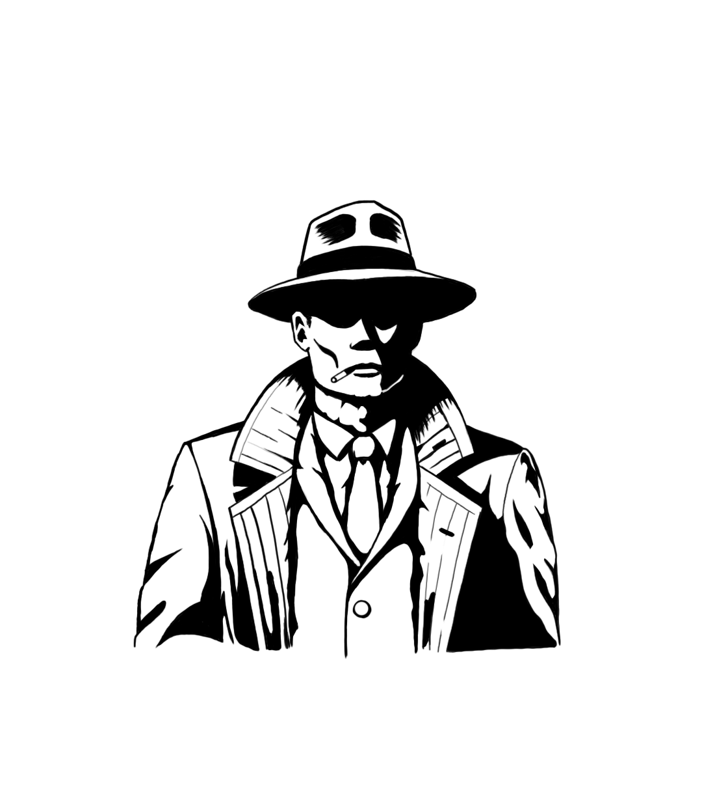
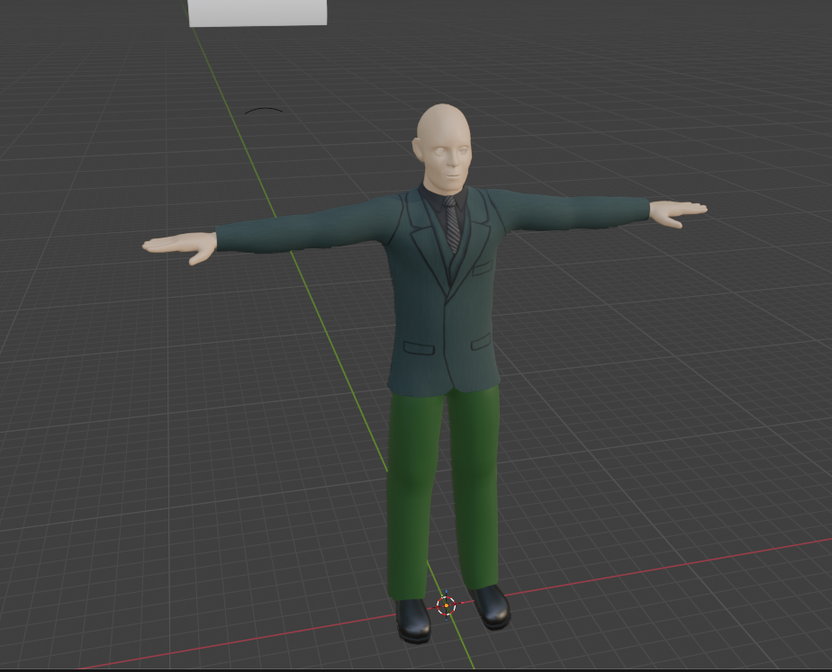
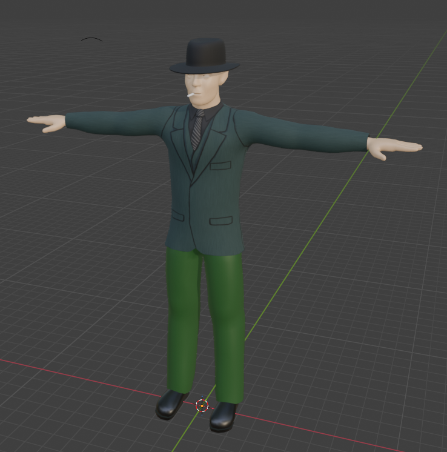

Charlie Holloway, PI

Charlie is the playable character in my independently developed game, The Casebook of Charlie Holloway. I was inspired by the private detectives of 1950s film noir, but I wanted to give him a unique outfit that would fit in the world of Baz Luhrmann's The Great Gatsby.



